Correction 5/15 : connaissances des cartes
Réponse : 8. Problematic Ultimatum

au Festival Dons des Dragons 2025
Par les Arpenteurs de Strasbourg
Samedi 6 décembre 2025
Bienvenue dans ce quiz sur Magic: the Gathering , notre jeu préféré !
Il y aura 15 questions, chacune suivie de sa réponse détaillée. Les questions sont généralement à choix multiple, avec 4 options proposées.
Elles portent sur divers aspects du jeu : le lore, les règles, l’histoire du jeu, les cartes, les statistiques, etc
Répondez sur vos ardoises, et à chaque question nous compterons les bonnes ou mauvaises réponses !
De quel(le) célèbre Planeswalker provient cette citation ?
« Bien sûr qu’il faut combattre le feu avec le feu. D’ailleurs, il faut tout combattre avec le feu »
Réponse : 2. Jaya Ballard
Bien que Chandra Nalaar soit la pyromancienne la plus connue actuellement, cette citation emblématique appartient à son mentor, la légendaire Jaya Ballard.
On la trouve notamment sur le texte d’ambiance de la carte Grésillement (Sizzle) de Sixième Édition.
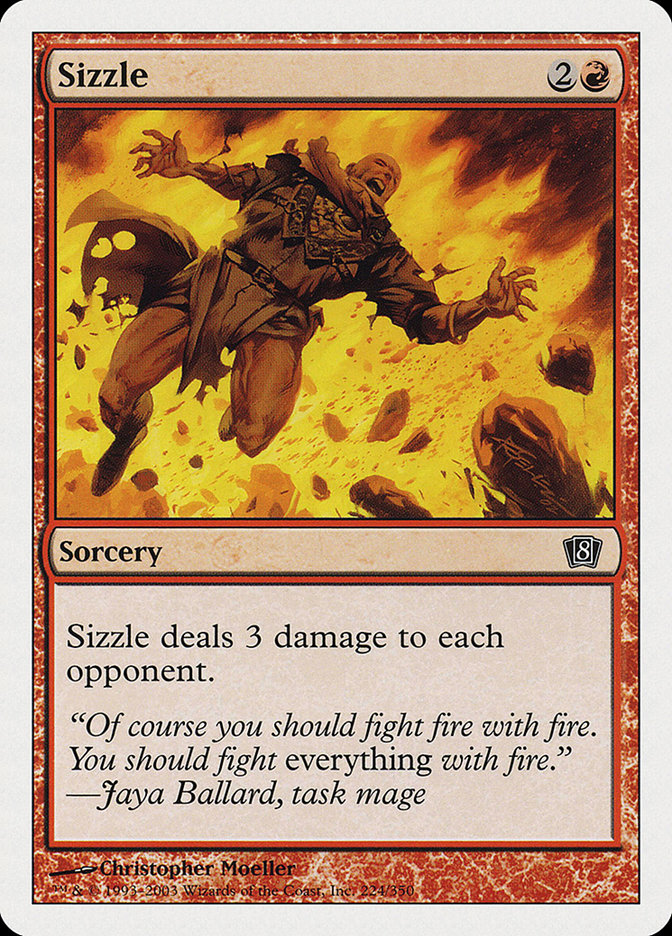
Quelle extension, tristement célèbre pour avoir réimprimé massivement des cartes puissantes des premières éditions (comme Arabian Nights ou Legends), a provoqué la création de la “Reserved List” (Liste de Réserve) ?
Réponse : 2. Chronicles (1995)
Cette extension était entièrement composée de réimpressions de cartes d’extensions précédentes (comme Legends, The Dark, Arabian Nights), mais avec des bords blancs.
Sa sortie en grande quantité a fait chuter la valeur perçue des cartes originales (à bords noirs), provoquant la colère des collectionneurs et des magasins.
En réponse, Wizards of the Coast a créé la “Reserved List” en 1996, promettant de ne jamais réimprimer certaines cartes pour préserver leur valeur sur le marché secondaire.
Parmi les types de créatures suivants (en ne comptant pas “Humain”), quel est celui qui apparaît sur le plus grand nombre de cartes imprimées (en papier, en cartes uniques, pas en nombre d’impressions différentes) ?
Réponse : 3. Magicien (Wizard)
En date d’aujourd’hui (2025), les décomptes sur Scryfall (comptant les cartes uniques, pas les impressions) sont :
(Le type “Humain” reste le plus courant, avec plus de 4 157 cartes actuellement).
Quelle planeswalker a été tourmentée pendant la majeure partie de sa vie par une entité mystérieuse connue sous le nom de “The Raven Man” (L’Homme Corbeau) ?
Réponse : 4. Liliana Vess
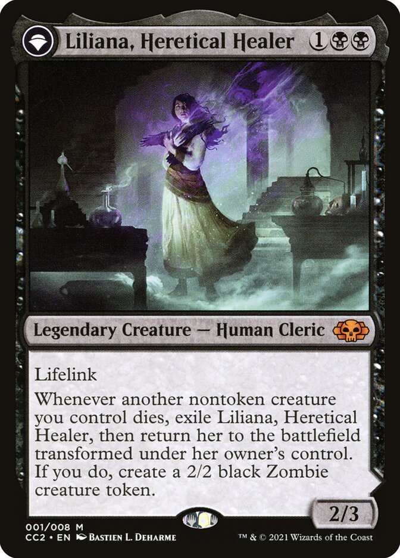
L’Homme Corbeau est apparu à Liliana pour la première fois sur Dominaria, avant même l’éveil de son étincelle. Il l’a manipulée et tourmentée, la poussant à maudire son frère alors qu’elle voulait le soigner.
Il a été révélé bien plus tard (dans l’histoire de Dominaria United) que l’Homme Corbeau était Lim-Dûl, un nécromancien ancien, lui-même influencé par le planeswalker Mairsil.
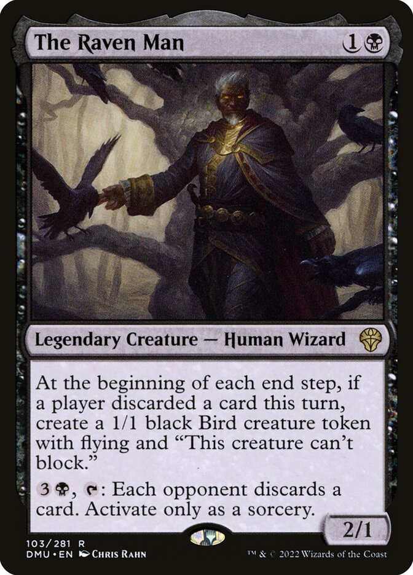
Parmi les cartes « Ultimatums » suivants, une seule n’existe pas en tant que carte imprimée dans Magic: the Gathering, laquelle ?
En français : Ultimatum luminescent ; U claironnant ; U cruel ; U inquiétant ; U émergent ; U de genèse ; U inspiré ; U problématique ; U ruineux ; U titanesque ; U violent
En anglais : Brilliant Ultimatum ; Clarion U ; Cruel U ; Eerie U ; Emergent U ; Genesis U ; Inspired U ; Problematic U ; Ruinous U ; Titanic U ; Violent U
Je contrôle un Ourson
(une créature 2/2). Mon adversaire la cible avec un Choc
(pour lui infliger 2 blessures). Le Choc est sur la pile.
En
réponse, je lance Projection
(Fling), sacrifiant mon Ourson, pour infliger 2 blessures à mon
adversaire. L’action est-elle légale ?
Réponse : 1. Oui, l’action est parfaitement légale.
Les Actions Basées sur l’État (SBA, State-Based Actions), qui incluent la mort des créatures ayant des blessures létales (Règle 704.5g), ne sont vérifiées que lorsqu’un joueur s’apprête à recevoir la priorité.
Une seule de ces célèbres mécaniques de jeu (nommées en anglais) a une carte portant son nom exact (en anglais) ?
Comment le titan Eldrazi, Emrakul, a-t-elle été neutralisée lors des événements de l’extension La Lune Hermétique (Eldritch Moon), sur Innistrad ?
Réponse : 2. Attirée dans la lune d’argent d’Innistrad et emprisonnée à l’intérieur par Tamiyo.
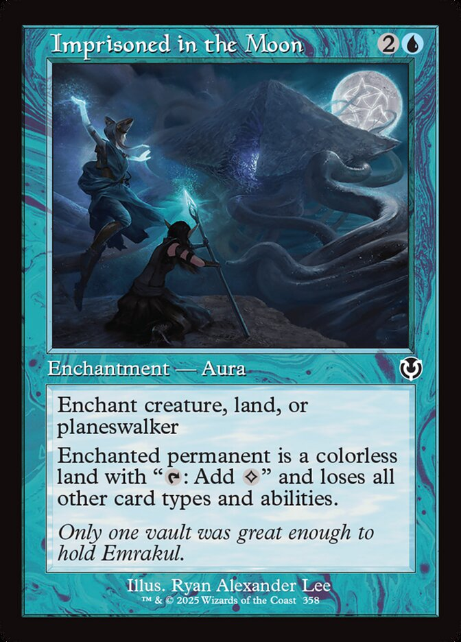
Alors que les Sentinelles étaient sur le point d’être vaincus, la planeswalker Tamiyo a utilisé un puissant sort d’emprisonnement, pour lier la conscience d’Emrakul à la lune d’Innistrad. Il a été fortement sous-entendu qu’Emrakul s’est “laissée faire”, murmurant “Je serai au seul endroit où je ne peux pas être atteinte” à Jace. (Les titans Ulamog et Kozilek ont été détruits sur Zendikar, mais Emrakul est toujours “vivante”.)
Laquelle de ces capacités activées n’est PAS une capacité de mana (et utilise donc la pile, pouvant être contrée ou répondue) ?
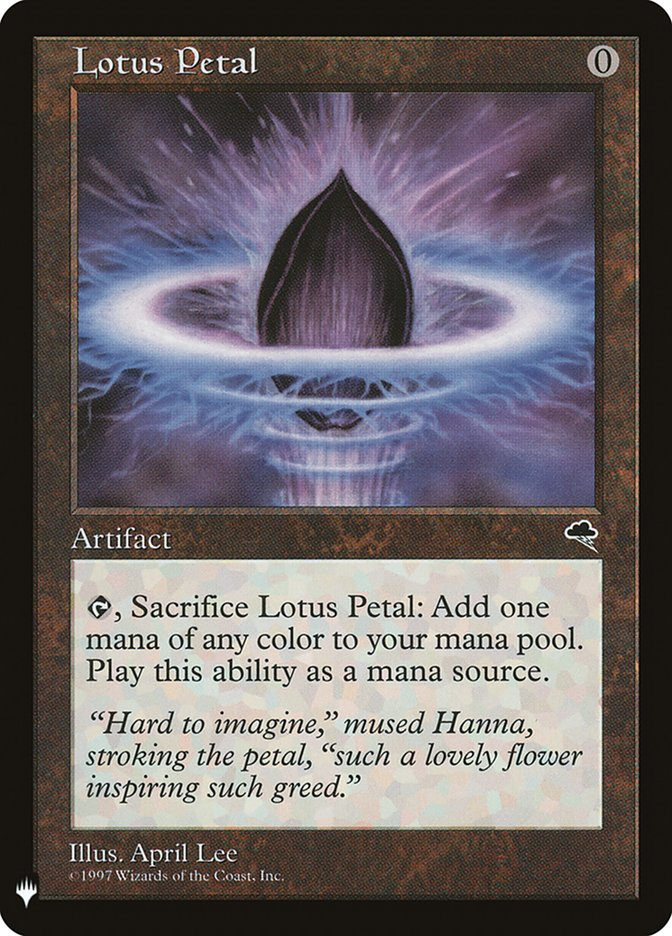
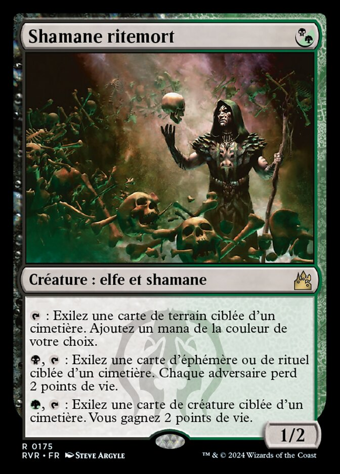

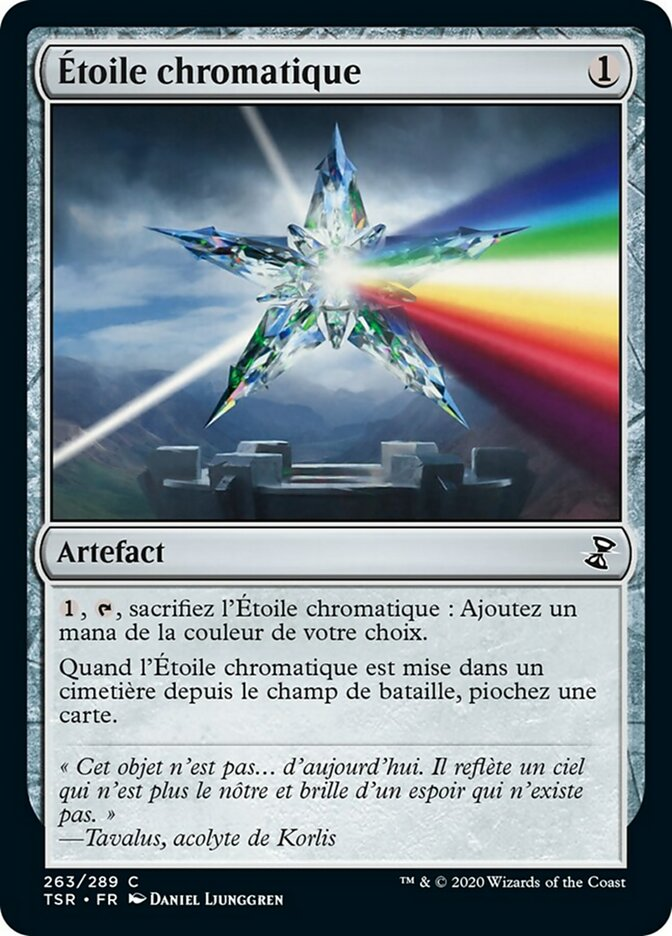
Réponse : 2. La première capacité du Shamane ritemort (Deathrite Shaman)
La Règle 605.1a définit ce qu’est une capacité de mana. Pour en être une, une capacité activée doit (entre autres) :
La première capacité du Shamane Ritemort (“Exilez une carte de terrain ciblée d’un cimetière…”) cible une carte. Par conséquent, ce n’est pas une capacité de mana. Elle utilise la pile et on peut y répondre (par exemple, en exilant le terrain ciblé avec un autre effet avant la résolution).
Parmi les artistes suivants, lequel n’a JAMAIS illustré de carte appelée Black Lotus, depuis l’origine de Magic: the Gathering jusqu’à aujourd’hui ?
Réponse : 3. John Avon !
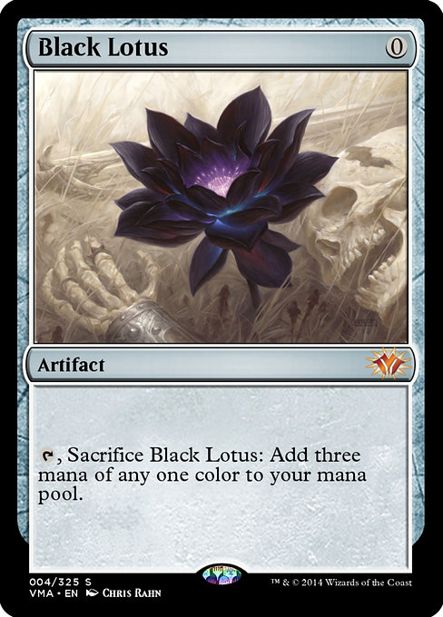
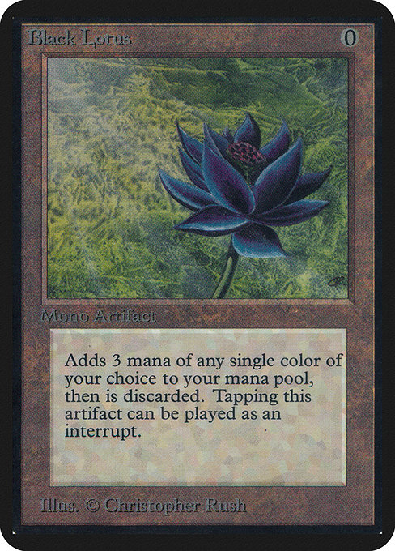
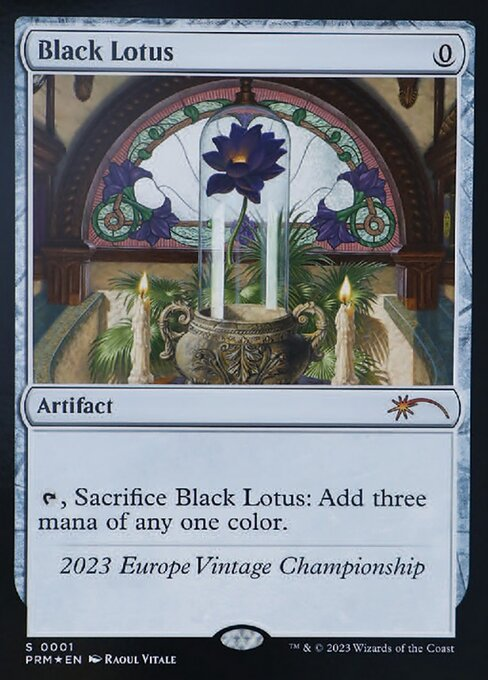
Il n’existe qu’une seule carte (à bord noir, non-Un) imprimée avec la capacité textuelle inconditionnelle, “Protection contre tout” (Protection from everything). Laquelle ?
Réponse : 1. Progenitus
Imprimée à l’origine dans Conflux, Progenitus est la seule carte avec le texte de règle “Protection contre tout”. Cela signifie qu’il ne peut pas être bloqué, ciblé, ou se voir infliger des blessures par quoi que ce soit.
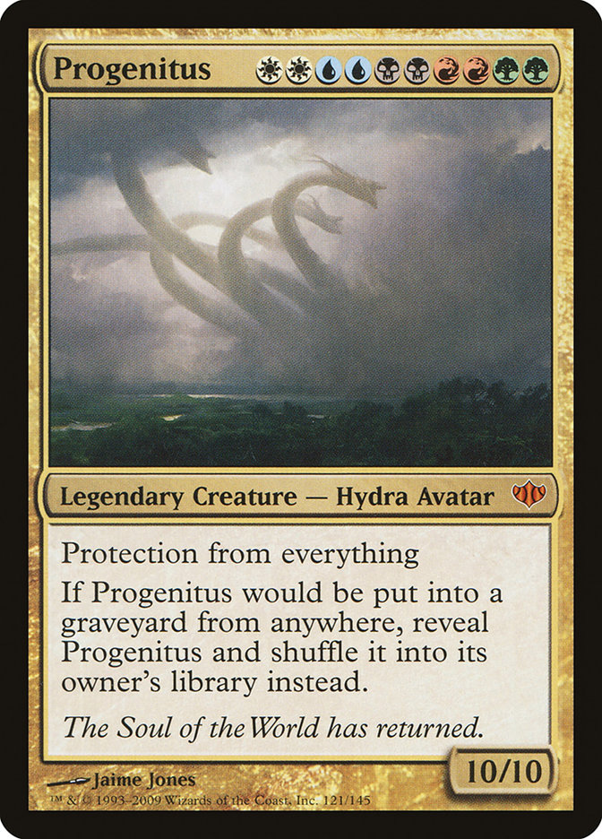
Qui était la capitaine originale du navire volant “L’Aquilon” (The Weatherlight), avant que Gerrard Capashen ne prenne la relève lors du bloc Tempête ?
Réponse : 4. Sisay
La Capitaine Sisay était la descendante de la lignée qui pilotait l’Aquilon. L’intrigue principale du bloc Tempête commence lorsque Sisay est kidnappée par Volrath (l’Evincar de la Forteresse), et que Gerrard Capashen (un vieil ami et l’héritier de l’Héritage) est recruté par l’équipage pour la sauver et reprendre le commandement du navire.
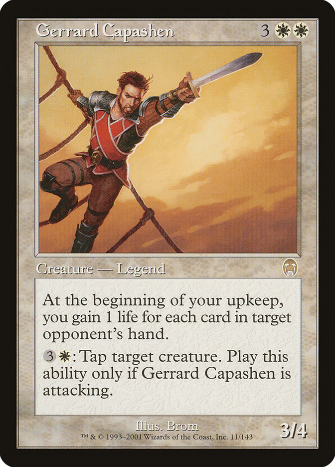
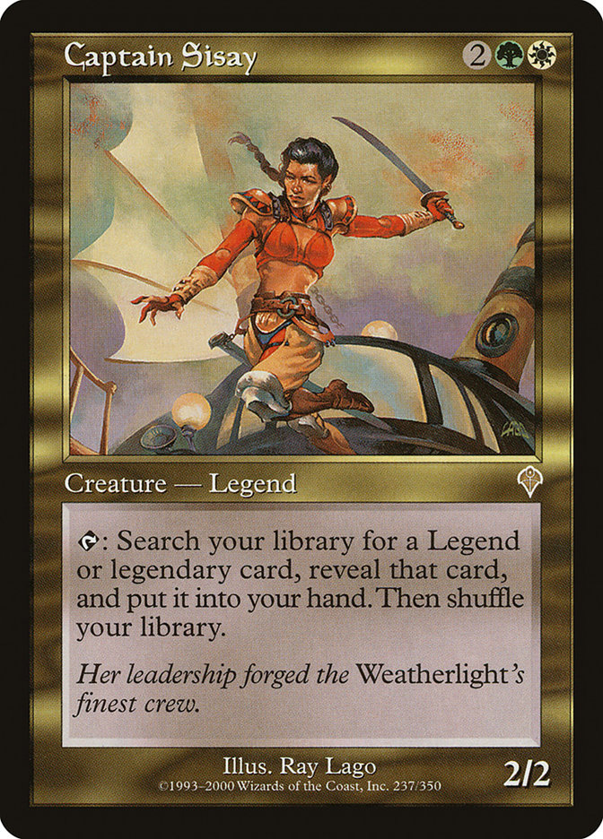
Laquelle/lesquelles de ces cartes a/ont une Capacité de Définition de Caractéristiques (CDC) ?
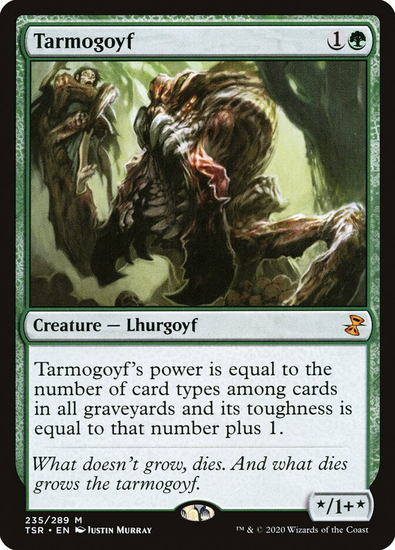
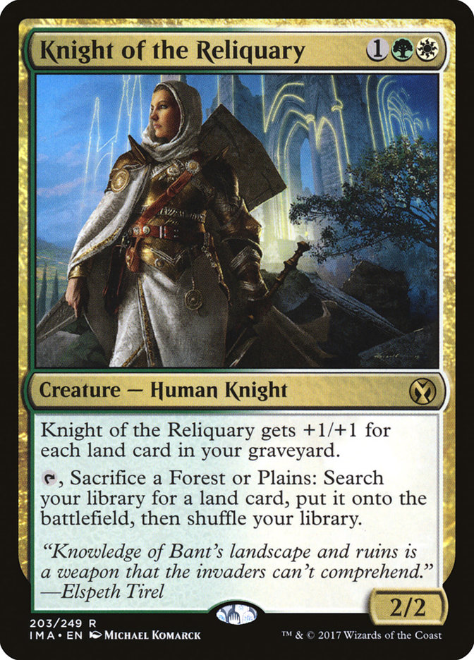
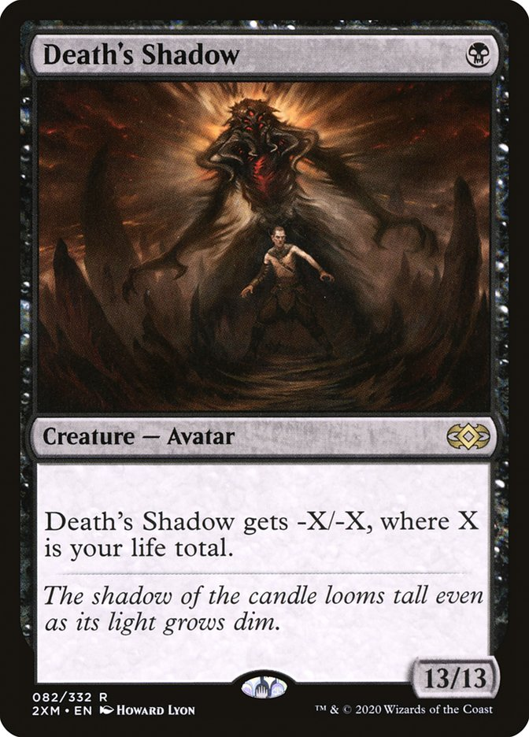
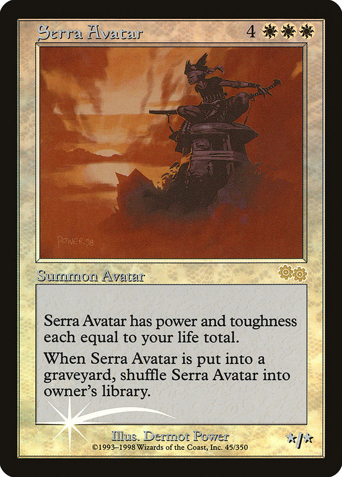
1 - Tarmogoyf 2 - Knight of the Reliquary 3 - Death’s Shadow 4 - Serra Avatar
Les CDC définissent les caractéristiques en tout lieu.
Les seules CDC ici sont les capacités du Tarmogoyf et de Serra Avatar.
En multi-joueurs EDH, le joueur actif (Aragorn) n’est pas le monarque, il inflige des blessures léthales par un sort (et pas des blessures de combat), à un de ses adversaires (Bolas), qui est actuellement le monarque. Que devient le statut de monarque ?
Réponse : 1. Le joueur actif (Aragorn) devient le monarque.
Combien existe-t-il de cartes en tout, qui représentent les parents du plus mignon petit singe de tout Magic, Kibo, prince de l’Ouktabi ?
Réponse : trois, Kibo lui-même étant représenté avec ses parents.
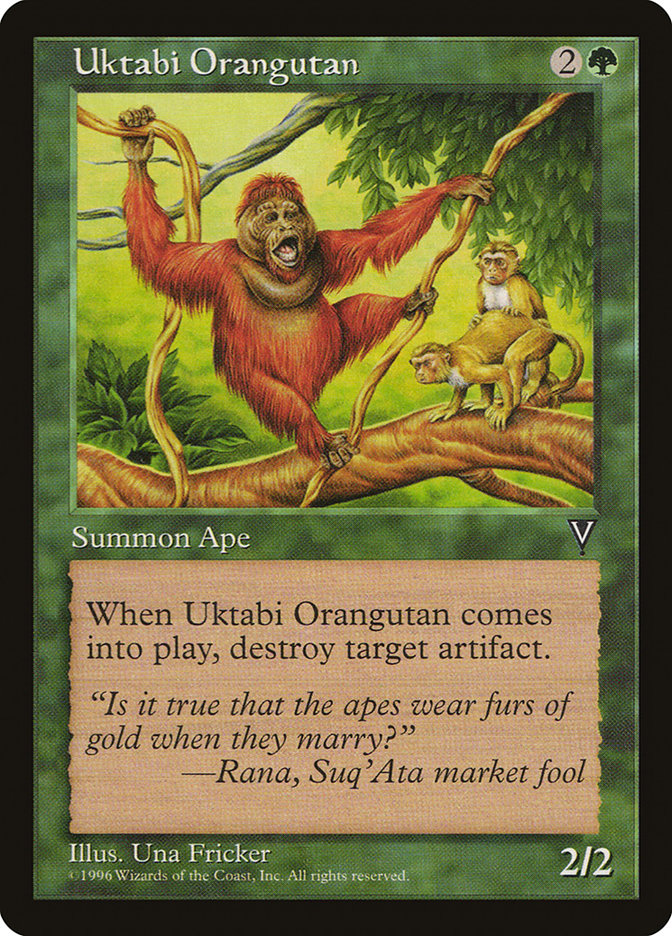
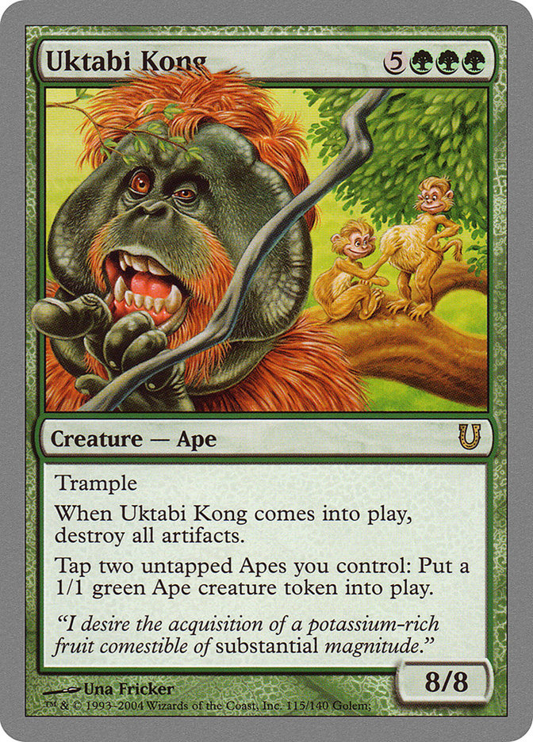
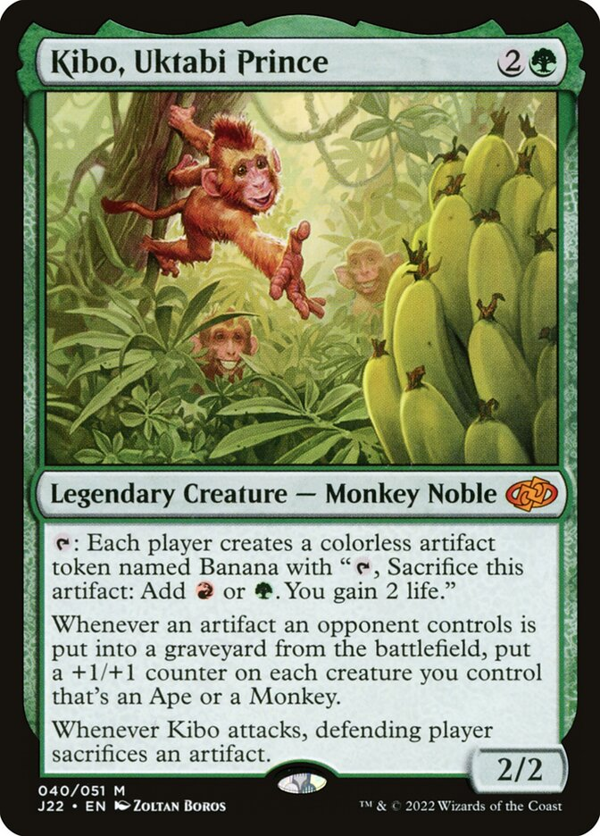
pandoc, avec l’option
“slidy” ;AllPrintings.sqlite du
projet MTG
JSON pour vérifier certaines réponses ;